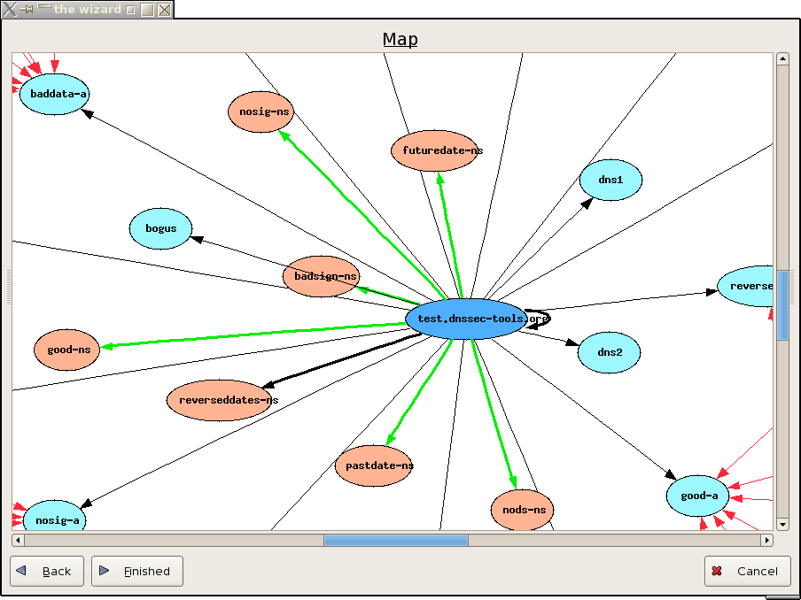

The following images show the GUI option screens. If you run mapper without any arguments you'll get a series of screens walking you through the settings to run mapper.
The output image file can be shown in a (cheap) graphical image browser, if requested:
